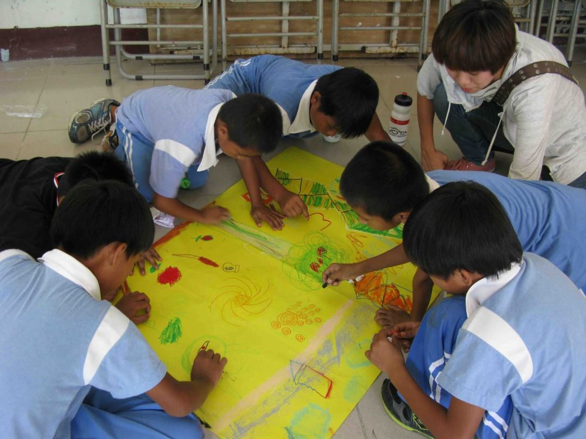

Design Challenge
The design challenge was taken frmo the IDEO Human Centered Design Toolkit. It helped in establishing the fundamental problems with my website and how to begin solving them.
The design challenge was taken frmo the IDEO Human Centered Design Toolkit. It helped in establishing the fundamental problems with my website and how to begin solving them.
Various audiences were addressed and each given overarching goals as well as specific goals. Focusing on the goals of the audience helped in designing the primary and secondary call to action.